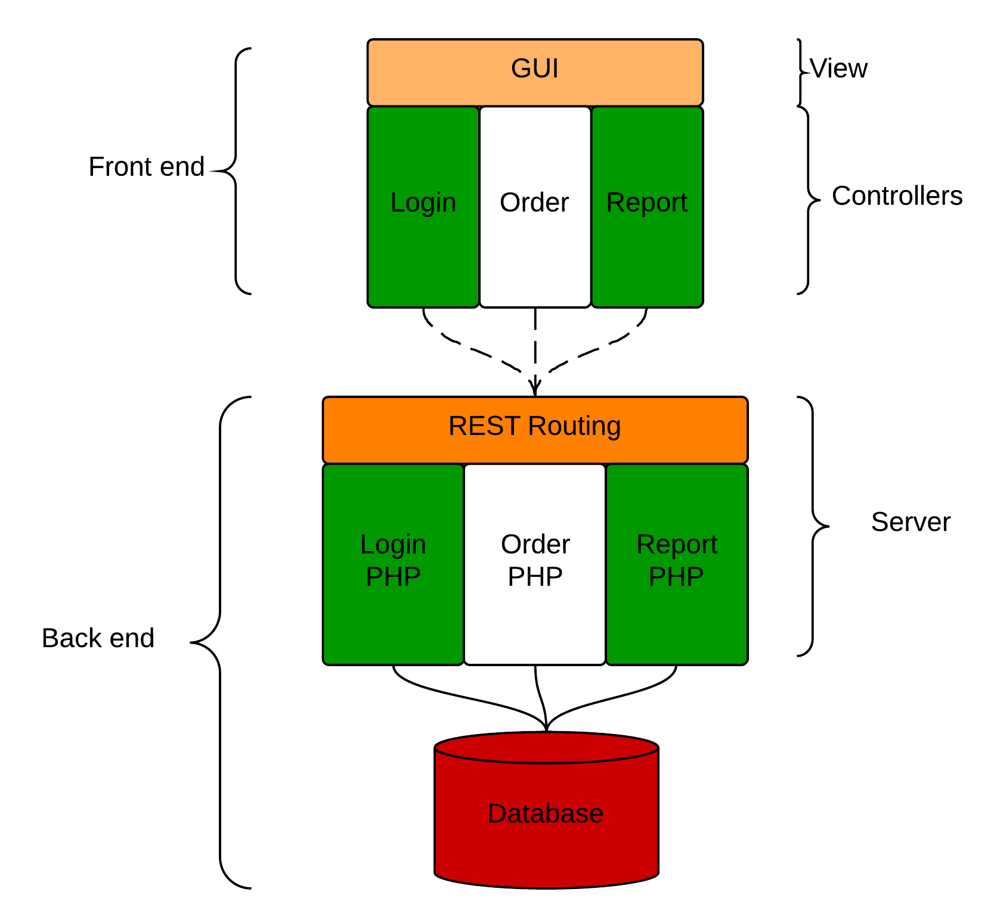

Commission
by
Johan Angelstam & Fredrik Rosenqvist
Our Testing tool
Protractor
- https://github.com/angular/protractor
- End to end testing
- Gray-box
- Test framework for AngularJS applications
- Built on top of Selenium WebDriverJS for controlling the browser
- Using the Jasmine framework for writing test cases
- Run tests in a real browser
Getting started
- Install Node.JS
-
Install Protractor
$ npm install -g protractor -
Download and start the Selenium server
$ webdriver-manager update $ webdriver-manager start
Configure the testing
environment
// myConf.js
exports.config = {
seleniumAddress: 'http://localhost:4444/wd/hub',
capabilities: { 'browserName': 'firefox' },
specs: ['*Test.js']
}
Example of test case
// loginTest.js
describe('basic test on website', function() {
var angularPage = require('./AngularPage.js');
beforeEach(function() {
angularPage.navigate();
})
//Testing to log in
it('should be able to log in', function() {
var userNameField = element(by.model('loginUserForm.user'));
userNameField.sendKeys('fredrik');
var passwordField = element(by.model('loginUserForm.password'));
passwordField.sendKeys('123');
var loginButton = element(by.id('loginUserButton'));
loginButton.click();
var welcomeMessage = element(by.id('welcomeMessage'));
expect(welcomeMessage.isDisplayed()).toEqual(true);
});
});
Important parts
Describe statement
describe('basic test on website', function() {
...
});
it statement
.
.
.
it('should be able to log in', function() {
/*Things you would like to the browser to do*/
var loginButton = element(by.id('loginUserButton'));
loginButton.click();
expect(welcomeMessage.isDisplayed()).toEqual(true);
});
Run the tests
$ protractor tests/myConf.js
Using the selenium server at http://localhost:4444/wd/hub
...
Finished in 5.793 seconds
1 tests, 1 assertions, 0 failures
Design
Software structure
- Web-application
- AngularJS
- Relatively new
- First release 2010
- MVC
-
3 Modules
- Login
- Orders
- Report
Architecture
System structure
System state diagram
Used techniques